www.Astronovel.github.io
|
|
|
|
www.Astronovel.github.io |
|
|
|
|||||||||||||||||||||||
|
Mi telescopio 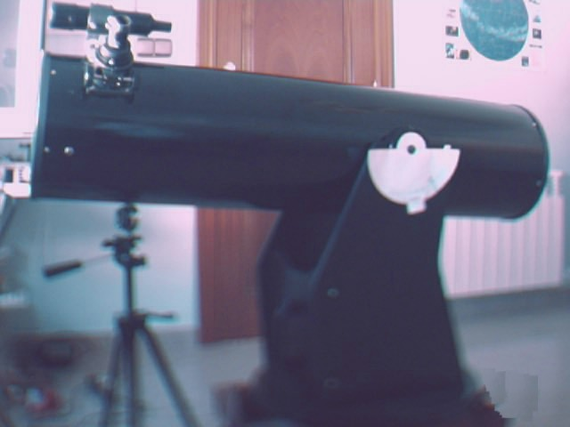 en el 2000 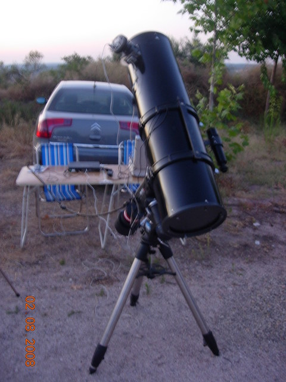 en el 2008 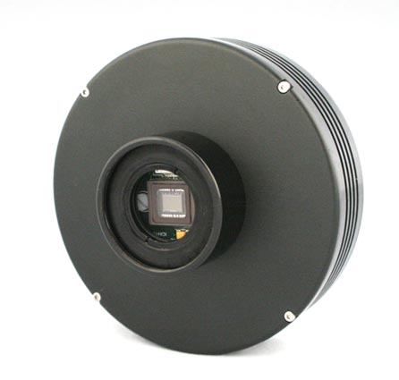 CCD ATK 16IC S El maquinillo para hacer las fotos. Los programas que me acompañan: Una carta celeste Localizador de estrellas desde que me lo paso Alfonso Pulido, en el RETA 2008 mi espalda y cuello se lo agradece. Seguimiento de satélites artificiales. El programa de la CCD Calculador tiempo exposición para astro fotografÃa. Ocultaciones de planetas y estrellas por la Luna. 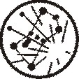 atlagnom.zip Atlas gonomico. 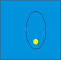 Orbitas.exe (cometas y asteroides).
|
El telescopio |
||||||||||||||||||||||
|
Es el instrumento óptico que permite ver objetos lejanos con mucho más
detalle que a simple vista. Esta compuesto de un objetivo y un ocular. El objetivo en un telescopio es la lente o el espejo de mayor tamaño. Los datos ha tener en cuenta en el objetivo son la distancia focal (mm) y el diámetro (mm). En función de estos, se determina la relación focal (F/), que es la distancia focal entre el diámetro. |
|||||||||||||||||||||||
|
|
|||||||||||||||||||||||
| Objetivo
de 1000 mm DF (distancia focal) y 200 mm D (diámetro), su relación seria
1000DF/200D= 5 ( f/5 ) |
|||||||||||||||||||||||
| Ejemplos: | |||||||||||||||||||||||
| Objetivo
de 1000 mm DF (distancia focal) y 100 mm D (diámetro), su relación seria
1000DF/100D= 10 ( f/10 ) |
|||||||||||||||||||||||
|
Existen varios tipos de telescopio en función de su objetivo: |
|||||||||||||||||||||||
| Refractores,
son los telescopios que su objetivo es
una o varias lentes. |
|
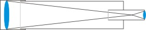 |
|||||||||||||||||||||
|
Con el fin de corregir la aberración cromática, y otras
aberraciones como la esfericidad, existen una gran variedad de
configuraciones ópticas para el objetivo.
|
|||||||||||||||||||||||
|
Clark |
Astrofotográfico |
Cooke |
Ross |
fotovisual |
|||||||||||||||||||
|
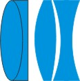 |
|
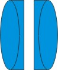 |
|||||||||||||||||||||
| Reflectores, los que su objetivo es un
espejo cóncavo.
Hay de varios tipos: |
|||||||||||||||||||||||
|
Reflector de NEWTON El espejo primario es un paraboloide cóncava, y el secundario, plano. |
Reflector de CASSEGRAIN El espejo primario es un paraboloide cóncava pero el secundario, a diferencia del newton, es un hiperboloide convexo. |
||||||||||||||||||||||
| 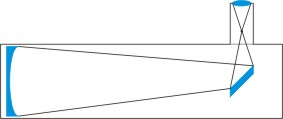 |
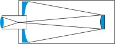 |
||||||||||||||||||||||
| Reflector
de GREGORY
Tiene un espejo secundario cóncavo con lo cual se obtiene una imagen no invertida. No son muy populares en la actualidad. |
Reflector
de HERSCHEL
Esta configuración ya no se usa debido a la dificultad para obtener buenas paraboloides fuera de eje, y a la incomodidad de la posición de observación. |
||||||||||||||||||||||
| 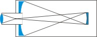 | 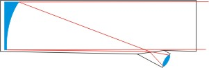 | ||||||||||||||||||||||
| Catadióptricos, que su objetivo poseen un
espejo cóncavo y una lente correctora.
Hay de varios tipos: |
|||||||||||||||||||||||
| SCHMIDT-NEWTON
Es un Newton al que se le ha colocado una lente correctora Schmidt en el extremo del tubo, y acorta la longitud de este. |
SCHMIDT-CASSEGRAINEl
El Schmidt, más que un telescopio, es en realidad una cámara fotográfica cuya relación focal es muy corta. |
MAKSUTOV
Casi igual a los Schmidt-Cassegrain. Difiere la lente correctora más compleja y de mayor calidad que la lente Schmidt. Los Maksutov eliminan las aberraciones cromáticas y esféricas. |
|||||||||||||||||||||
| 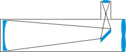 | 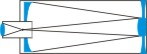 | 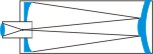 | |||||||||||||||||||||
| Otra de la parte fundamental de cualquier tipo de telescopio es el ocular que también esta formado por una o varias lentes, de distancia focal muy corta con respecto al objetivo, y donde el observador sitúa el ojo. Dos datos a tener en cuenta en los oculares uno su distancia focal (mm), y otro su campo aparente (º), cuanto mayor sea el campo aparente mas agradable es la visión. | |||||||||||||||||||||||
| Radian
60º |
Lanthanum
(LV)
50º |
Nagler
tipo 2
82º |
Erfle
(Er)
DE 50º a 70º |
Plössl
(Pl)
de 35º a 50º |
|||||||||||||||||||
| 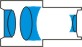 | 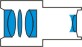 | 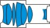 | 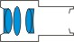 | 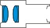 | |||||||||||||||||||
| Ortoscopíco(Or)
de 35º a 50º |
Kellner
(K)
de 35º a 50º |
Huygens
(H)
de 25º a 40º |
|||||||||||||||||||||
| 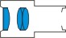 | 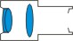 | ||||||||||||||||||||||
| Conociendo el objetivo y el ocular, podemos conocer los aumentos que nos puede dar un telescopio. Se establece que los aumentos de un telescopio ha de estar entre su máximo, que es igual al diámetro del objetivo multiplicado por 2, y el mínimo que seria el diámetro del objetivo dividido por 7 para obtener una visión lo mas nítida posible, ya que no nos serviría de nada que un objeto se viera muy grande, si no se aprecian los detalles. | |||||||||||||||||||||||
|
Ejemplos: |
Para un telescopio de 115 mm, el aumento máximo y mínimo teórico seria 230
aumentos máximos y como mínimo 16 aumentos,
para obtener una visión optima. |
||||||||||||||||||||||
|
Para
un telescopio de 250 mm, el aumento máximo y mínimo teórico seria 500
aumentos máximos y como mínimo 35 aumentos,
para obtener una visión optima. |
|||||||||||||||||||||||
|
Calcular los aumentos de los telescopio:
X = a la
distancia focal (DF) del objetivo (o espejo según tipo telescopio) en mm
dividido por la distancia focal (DF) del ocular. |
|||||||||||||||||||||||
| Ejemplo telescopio de 115mm de objetivo con 900 mm DF + juego oculares de 4 mm , 12 mm y 25 mm |
900/4 = 225
aumentos = 225X 900/12
= 75 aumentos
= 75X 900/25
= 36 aumentos
= 36X |
||||||||||||||||||||||
| No seria aconsejable un ocular de 3 mm, ya que nos iríamos a 300X, que estaría fuera del rango teórico de aumentos. | |||||||||||||||||||||||
| Barlow, no es un ocular, sino un accesorio para estos. La Barlow incrementa la distancia focal, La barlow la podemos encontrar X2, X3.., e incluso con zoom variables. Como cualquier otra lente que se incorpore al telescopio conlleva una perdida de luminosidad, así como las aberraciones propias de la lente, para evitar estas aberraciones, al igual que los oculares se combinan unas series de lentes. También existen reductores focales. |
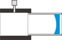 |
||||||||||||||||||||||
| Otros de los accesorios para oculares son los filtros: | |||||||||||||||||||||||
| Filtros de colores. Empleados para resaltar características especiales de objetos celestes como atmósfera de planetas, o superficie de estos. |
|
||||||||||||||||||||||
| Los Filtros de Banda Ancha. Eliminan la longitudes correspondientes al vapor de mercurio y sodio (contaminación luminosa) y dejan pasar el resto. | |||||||||||||||||||||||
| Filtros de Banda Estrecha. Eliminan todo el espectro visible excepto algunas longitudes de onda (colores) muy concretos como los que generan las nebulosas de emisión y las nebulosas planetarias | |||||||||||||||||||||||
| Filtros L-RGB Especialmente diseñados, para la fotografía de colores efectuadas en cuatro etapas, para CCD en B/N | |||||||||||||||||||||||
| Los telescopios suelen tener acoplado un pequeño refractor que se denomina buscador, aunque hoy en día, suelen sustituirse por un buscador de punto rojo o de puntero led... Su misión es servirnos de guía al objeto a observar. |
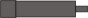 |
Para facilitar la tarea algunos buscadores suelen llevar una rejilla en forma de cruz, centrando el objeto a observar en dicha cruz, el objeto debe estar en el campo de visión del telescopio. | |||||||||||||||||||||
|
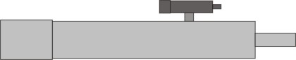 |
|||||||||||||||||||||||
| Las monturas es el soporté en el cual
se apoya el telescopio. Son muchas las clases de monturas que existen.
Pero las mas frecuentes son tres:
|
|||||||||||||||||||||||
|
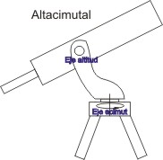 |
Altacimutales son
las monturas que se mueven en los dos planos: el horizonte o acimut,
dividido en grados (0º a 360º, desde el Norte hacia el Este) y plano
vertical o altura desde el horizonte hasta el cenit, también en grados (0º
para el horizonte a 90º para el cenit). Para determinar estas posiciones
esta montura suelen traer incorporado círculos graduados, utilizados para
ubicar objetos, o para saber la ubicación de estos. También se
pueden motorizar, y el seguimiento de un objeto se realiza moviendo tanto
en plano horizontal y vertical
al mismo tiempo. La puesta en estación es fácil , solo tener bien nivelada la montura en el caso de que sea motorizada, y como referencia que la marca de 0º coincida con el Norte. |
||||||||||||||||||||||
|
Dobson,
es la montura altacimutal mas sencilla y barata, y generalmente
empleada en grandes telescopios de aficionados. Movidas manualmente,
aunque se pueden motorizar. Su puesta en estación es sencilla basta con
estar nivelada. Y en el caso de estar motorizada debe estar bien nivelada.
|
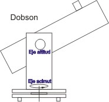 |
||||||||||||||||||||||
|
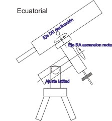 |
Ecuatoriales, son las
monturas mas utilizada
por los aficionados, dado que su mayor ventaja es la posibilidad de seguir
a los objetos celestes con solo mover un eje. También puede estar
motorizados, para que el seguimiento sea automático y los objetos se
mantengan centrados en el campo visual. Es mas
compleja que la altacimutal y
es imprescindible que este correctamente alineada. Los planos
de movimiento en que se basa son el ecuador celeste (proyección del
ecuador terrestre) y la declinación DE (distancia angular en grados desde
el ecuador hasta el cenit) Aún así es la más recomendable para
astronomía. Lo que hace una montura ecuatorial es compensar el movimiento de rotación de la Tierra con el eje de ascensión recta RA (plano paralelo al ecuador celeste, dividido en 24 horas, desde el punto del equinoccio de primavera hacia el este) |
||||||||||||||||||||||
 |
Con telescopio o prismáticos jamás se debe de mirar directamente al sol. Solo con los filtros especiales para estos.
O telescopios específicos para el Sol
|
 |
|||||||||||||||||||||
|
|
|
||||||||||||||||||||||